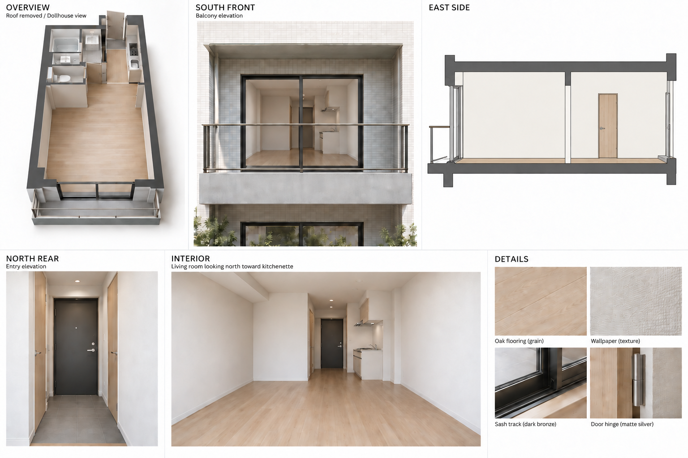
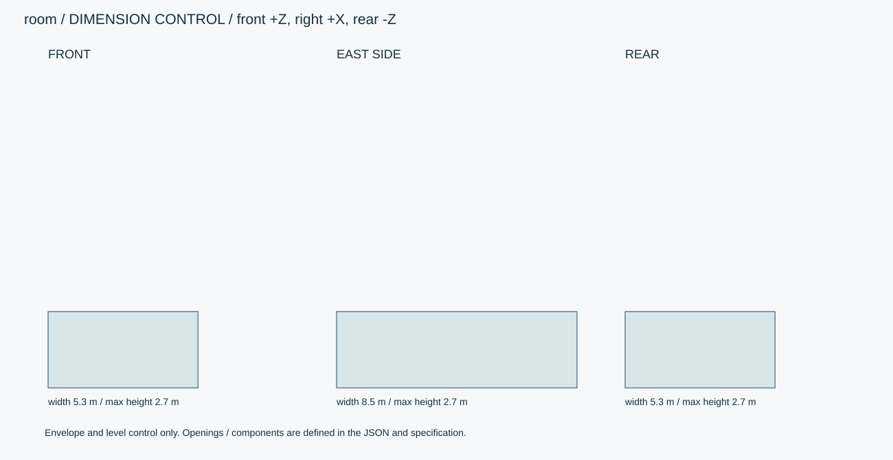
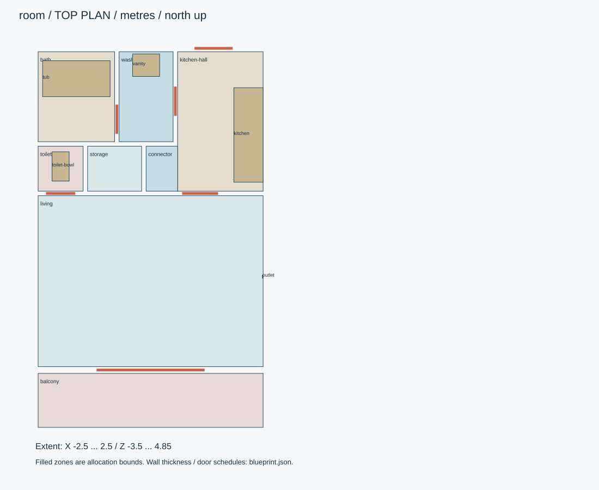
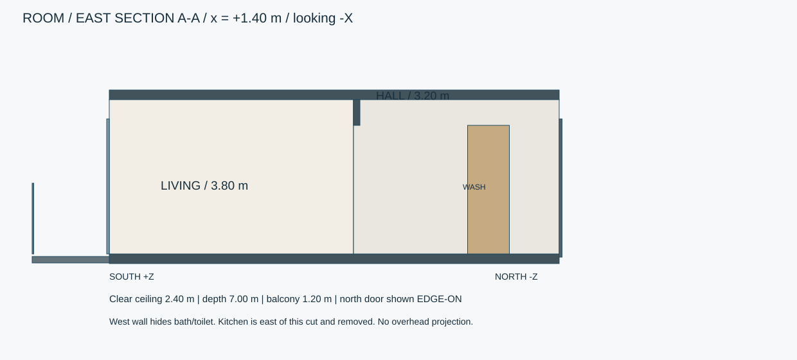

apartment-room / interior / design_review
都市のマンションとは別の1K住戸。内法5×7m、南側に奥行1.2mバルコニー。家具・可動家電は含めない。

画像は外観参考です。生成時は数値仕様を優先してください。


X=+1.40mで東から西を見る断面。左が南・右が北。玄関扉は北端に小口として表示します。

INTERIORの玄関ドアノブは右側のみ。部屋は空室のままです。